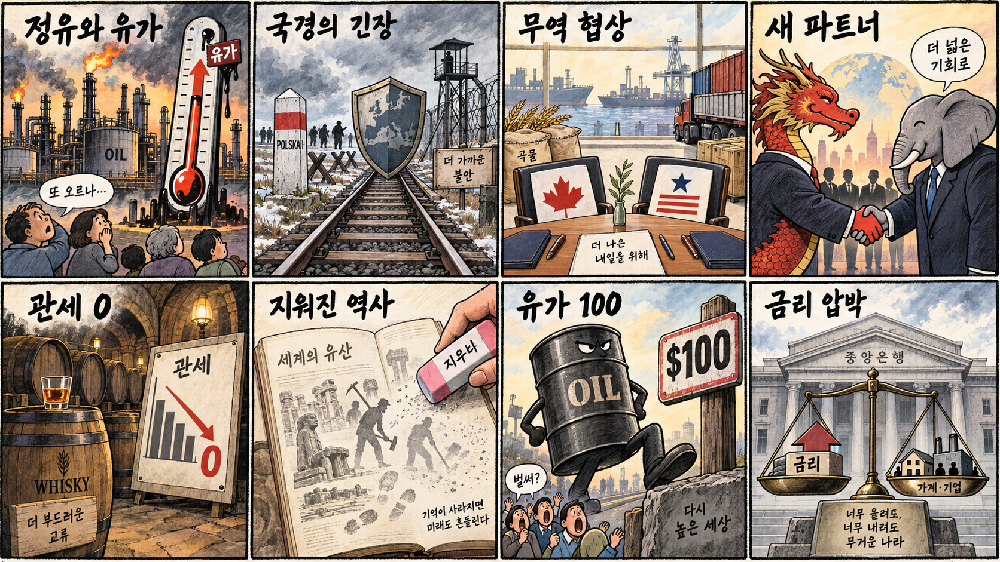
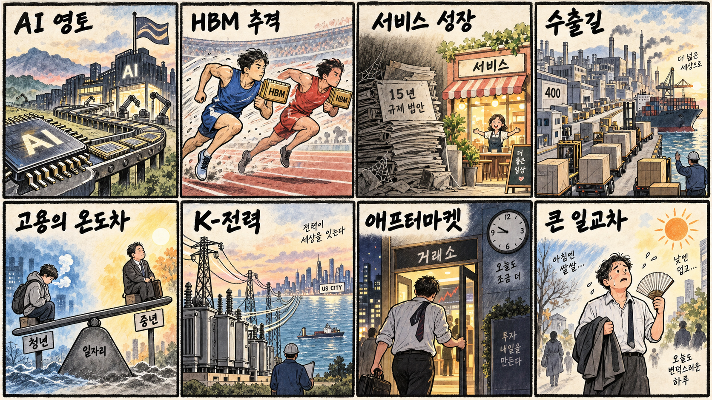

01
슈퍼마이크로컴퓨터 · 37.76→40.10달러 · +6.20%
내용요약 시가 대비 강하게 반등해 조사 대상 가운데 가장 높은 상승률을 보였습니다.
예상여파 AI 서버 수요 기대를 보여주지만 변동성이 커 국내 연결종목의 추격 근거로 삼기 어렵습니다.
MORNING_BRIEFING_20260914
작성 시각: 2026-09-14 06:37 KST · 직전 미국 정규장과 2026-09-14 KST 당일 공개 기사 기준
직전 미국 정규장인 9월 11일 뉴욕증시는 위험선호 회복으로 다우 +0.98%, S&P 500 +0.86%, 나스닥 +0.96%로 반등했습니다. 다만 엔비디아·마이크론·오라클 등 일부 AI 인프라주는 시가 대비 약세여서 지수와 종목의 차별화가 컸습니다. 오늘 한국 증시는 미국 반등이 완충재지만 원·달러 환율, 외국인 반도체 수급, KOSPI 7,000선 회복 여부를 함께 확인해야 합니다.
| 지수 | 종가 | 등락률 | 한국 증시 시사점 |
|---|---|---|---|
| 다우존스 | 52,573.29 | +0.98% | 위험선호 완충, 종목 차별화 유의 |
| S&P 500 | 7,656.98 | +0.86% | 위험선호 완충, 종목 차별화 유의 |
| 나스닥 종합 | 26,333.04 | +0.96% | 위험선호 완충, 종목 차별화 유의 |
다우·S&P 500·나스닥이 모두 0.8% 이상 올랐습니다.
환율과 외국인 반도체 수급이 개장 방향을 좌우합니다.
원전 검토와 데이터센터 별도 요금 논의가 시작됐습니다.
필수 수급·컨센서스·보정 표본 문턱을 모두 충족한 후보가 없습니다.
9월 13일 보고서는 일요일 휴장과 필수 수급·컨센서스·보정 표본 부족으로 공식 추천을 내지 않았습니다. 게시 당시 판단은 유지하며 사후 종목을 추가하지 않습니다.
| 시장 | 종가 | 등락률 | 기준 |
|---|---|---|---|
| KOSPI | 6,909.91 | -1.76% | 9월 11일 · 시가 대비 +1.58% |
| KOSDAQ | 820.64 | -1.95% | 9월 11일 · 시가 대비 +0.46% |
| 다우존스 | 52,573.29 | +0.98% | 미국 9월 11일 정규장 |
| S&P 500 | 7,656.98 | +0.86% | 미국 9월 11일 정규장 |
| 나스닥 종합 | 26,333.04 | +0.96% | 미국 9월 11일 정규장 |
3대 지수가 0.8~1.0% 반등하며 위험선호가 회복됐습니다.
슈퍼마이크로컴퓨터가 시가 대비 6%대 상승했습니다.
직전 삼성전자 -3.53%, SK하이닉스 -2.21%로 마감했습니다.
오라클·엔비디아·마이크론은 지수 반등과 달리 밀렸습니다.
내용요약 시가 대비 강하게 반등해 조사 대상 가운데 가장 높은 상승률을 보였습니다.
예상여파 AI 서버 수요 기대를 보여주지만 변동성이 커 국내 연결종목의 추격 근거로 삼기 어렵습니다.
내용요약 대형 기술주 반등에 힘을 보태며 시가 대비 상승 마감했습니다.
예상여파 국내 부품주는 실제 공급 비중과 주문 변화를 별도로 확인해야 합니다.
내용요약 지수 반등과 반대로 시가 대비 큰 폭 하락했습니다.
예상여파 AI 데이터센터 투자 기대가 있어도 재무 부담과 밸류에이션 재평가가 단기 변동성을 키울 수 있습니다.
내용요약 시가 대비 하락해 메모리 업종의 상대 약세가 이어졌습니다.
예상여파 국내 메모리주는 미국 지수보다 외국인 수급과 환율 안정이 중요합니다.
내용요약 나스닥 상승에도 시가 대비 하락하며 지수를 따라가지 못했습니다.
예상여파 국내 AI 반도체 공급망에는 심리 부담이지만 개별 수주·실적과 분리해 판단해야 합니다.
KOSPI는 직전 거래일 6,909.91로 7,000선을 내줬지만 시가 대비로는 +1.58% 회복했습니다. 미국 3대 지수 반등은 오늘 개장에 완충 요인인 반면 엔비디아·마이크론 약세, 원화 강세에 따른 반도체 환산이익 부담, 국제유가 100달러 재돌파 보도는 경계 요인입니다. 개장 후 KOSPI 7,000선 회복과 외국인 선물·현물 동반 순매수 여부를 확인하기 전에는 갭 상승 추격을 피하는 편이 합리적입니다.
오늘은 추천 없음 — 현금 관망
06:30 KST 기준 당일 시가가 형성되지 않았고, 전일까지의 외국인·기관 수급, 최신 컨센서스 변화, 30건 이상 유사 조건 보정 확률, 예상 손익비 1.5를 동시에 검증한 후보가 없습니다. 종합점수와 상승확률을 임의로 만들지 않습니다.
관심 연결종목 AI 전력망·전력기기·반도체 인프라는 오늘 관찰 대상일 뿐 매수 추천이 아닙니다. 장전 예상 갭이 크면 추격하지 않습니다.
회복 여부와 외국인 선물·현물 동반 수급을 봅니다.
첫날 유동성과 시간대별 호가 공백을 확인합니다.
원화 강세와 유가 100달러가 수출·원가에 미치는 영향을 봅니다.
지수 반등에도 엔비디아·마이크론이 약했던 점을 점검합니다.
핵심 요약: AI 경쟁은 칩에서 공장·전력·상장시장으로 넓어졌습니다. 한국은 데이터센터 별도 요금과 원전 검토를 시작했고, 일본은 2나노 서버 CPU로 진입하며 미국은 속도조절보다 가속 기조를 택했습니다.
내용요약 한국 기업이 반도체 공급을 넘어 데이터센터·소프트웨어·전력까지 묶은 AI 공장 사업으로 영역을 넓힌다는 당일 보도입니다.
예상여파 수출 품목이 칩에서 통합 인프라로 확장되면 전력기기·냉각·시스템 통합 기업의 수주 기회가 커질 수 있습니다.
내용요약 기후부 장관이 반도체·AI 전력수요 대응을 위해 원전 검토가 불가피하며 데이터센터 별도 전기요금도 추진한다고 밝힌 당일 인터뷰입니다.
예상여파 요금체계가 바뀌면 데이터센터 입지와 운영비가 달라지고 원전·송전망 투자 논의가 빨라질 수 있습니다.
내용요약 일본 후지쯔가 인텔·AMD 중심 서버 CPU 시장에 2나노 AI CPU로 진입해 내년 미국·아시아 수출을 추진한다는 당일 보도입니다.
예상여파 AI 서버용 CPU 경쟁이 심화되면 파운드리·첨단 패키징 공급망의 선택지가 넓어지는 동시에 가격 경쟁도 커질 수 있습니다.
내용요약 국내 AI 스타트업 업스테이지가 코스닥 상장 방향을 잡았다는 당일 보도입니다.
예상여파 생성형 AI 기업의 상장 시도는 국내 성장자금 조달과 기업가치 산정의 시험대가 될 전망입니다.
내용요약 트럼프 미국 대통령이 AI 개발 속도조절론을 비판하며 중국과의 경쟁에서 기존 가속 기조를 유지하겠다고 밝힌 당일 보도입니다.
예상여파 미국 AI 투자와 규제 완화 기대는 유지되지만 안전·전력·자본 부담을 둘러싼 정책 충돌도 이어질 수 있습니다.
핵심 요약: 유가 100달러 국면에서 미국은 러시아 정유시설 공격 중단을 요구했고, 폴란드 접경 철도 공습은 유럽 안보 긴장을 높였습니다. 북미 무역협상과 중국·인도 협력, 일본의 강제동원 서술 삭제도 외교 변수입니다.
내용요약 트럼프 미국 대통령이 유가 급등을 이유로 우크라이나에 러시아 정유시설 공격 중단을 요구했다는 당일 보도입니다.
예상여파 에너지 시설 공격이 줄면 유가 위험 프리미엄이 완화될 수 있지만 전황과 제재가 남아 변동성은 지속될 수 있습니다.
내용요약 러시아가 폴란드 국경 약 2km 인근의 우크라이나 철도를 공습했다는 당일 보도입니다.
예상여파 나토 접경지역의 군사적 긴장이 커지면 유럽 운송·에너지 시장의 위험 프리미엄이 높아질 수 있습니다.
내용요약 트럼프 대통령이 캐나다와 조만간 무역 합의를 전망하며 USMCA 탈퇴에는 선을 그었다는 당일 보도입니다.
예상여파 북미 공급망의 불확실성이 완화되면 자동차·농산물 교역에 긍정적이지만 농업 관세 협상이 변수입니다.
내용요약 미국의 압박이 커지는 가운데 중국과 인도가 협력 관계를 강조했다는 당일 국제 보도입니다.
예상여파 두 나라의 전략적 공조가 강화되면 브릭스와 글로벌 남반구의 통상·외교 협상력이 커질 수 있습니다.
내용요약 일본 정부의 세계유산 책자에서 군함도·사도광산의 조선인 강제동원 서술이 빠졌다는 당일 보도입니다.
예상여파 과거사 갈등이 재점화되면 한일 외교와 문화유산 관련 협의의 부담이 커질 수 있습니다.

핵심 요약: 서비스산업법과 산업단지 수출 지원이 성장 의제로 부상한 가운데 청년 고용 감소가 구조적 부담입니다. 전력기기 수출 기회와 KRX 애프터마켓 출범은 산업과 자본시장의 변화를 보여줍니다.
내용요약 15년간 계류된 서비스산업발전기본법을 통과시켜 서비스업을 새 성장축으로 삼아야 한다는 당일 보도입니다.
예상여파 법안 논의가 진전되면 생산성 투자와 규제 정비가 빨라질 수 있으나 적용 범위와 이해관계 조정이 관건입니다.
내용요약 산업단지의 날 행사가 처음 지방에서 열리고 입주기업 400곳의 수출 지원이 추진된다는 당일 보도입니다.
예상여파 지역 제조기업의 해외 판로와 공동 마케팅이 확대되면 비수도권 산업단지의 투자·고용에 도움이 될 수 있습니다.
내용요약 청년 취업자는 28만5천명 줄고 50대는 23만명 늘어 AI 노출도가 높은 업종에서 고용 격차가 나타났다는 당일 분석입니다.
예상여파 직무 전환 교육과 신입 채용 통로가 보강되지 않으면 세대별 소득과 경력 격차가 확대될 수 있습니다.
내용요약 미국 전력난을 배경으로 한국 전력기기 기업의 수출 기회가 커진다는 당일 현지 보도입니다.
예상여파 변압기·배전설비 수요는 중장기 수주에 우호적이지만 증설 속도와 원자재·현지조달 조건을 확인해야 합니다.
내용요약 한국거래소가 정규장 이후 주식 거래가 가능한 애프터마켓을 오늘부터 연다는 당일 보도입니다.
예상여파 거래시간 확대는 접근성을 높이지만 유동성이 얕은 시간대의 호가 공백과 변동성 관리가 중요합니다.
